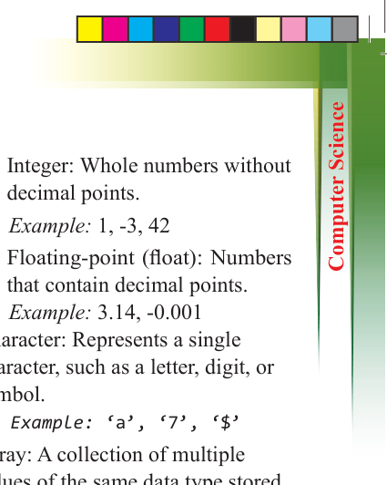
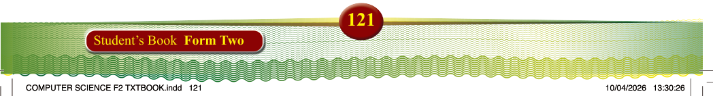
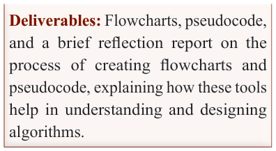
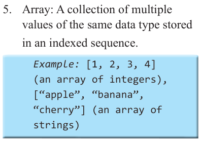

121
Student’s Book Form Two

Deliverables: Flowcharts, pseudocode,
and a brief reflection report on the process of creating flowcharts and
pseudocode, explaining how these tools
help in understanding and designing
algorithms.
Data types and data structures
In programming, data types and data
structures are fundamental concepts that determine how data is stored, organised,
and accessed. Understanding these
concepts is essential for writing efficient,
optimised, and maintainable code.
Data type
Data types define the kind of data a variable can store and determine the
operations that can be performed on that
data. Understanding data types is essential
for efficient and error-free programming.
Common data types include:
1. String: Represents a sequence of characters, such as words, phrases, or sentences.
Example: “Hello, World!”
2. Boolean: Represents a logical value with only two possible outcomes: true or false.
Commonly used in decision- making, such as yes/no or on/off scenarios.
3. Numeric types: Used to represent numbers and typically include:
(a) Integer: Whole numbers without decimal points.
Example: 1, -3, 42
(b) Floating-point (float): Numbers that contain decimal points.
Example: 3.14, -0.001
4. Character: Represents a single character, such as a letter, digit, or symbol.
Example: ‘a’, ‘7’, ‘$’
5. Array: A collection of multiple values of the same data type stored in an indexed sequence.

Example: [1, 2, 3, 4]
(an array of integers),
[“apple”, “banana”,
“cherry”] (an array of strings)
Data structures
Data structures are methods of organising,
and storing data in a way that allows for
efficient access and modification. The
choice of data structure depends on the specific needs of a program, such as how fast it needs to search for data, add new
data, or remove data. Some common
types of data structures include stacks,
heaps, trees, linked lists, queues, tables,
and graphs. Each of these structures offers different advantages for storing
and organising data, depending on the
task at hand.
To interact with and manipulate data stored in these structures, “control
flow structures” are used. Control flow